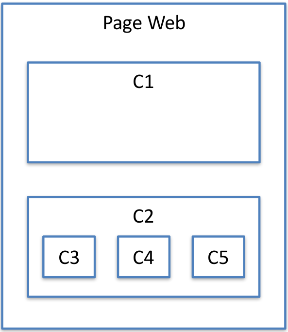

Introduction
Angular
Environnement de développement
Installation
ng new
ng serve
ng test
ng e2e
ng build
ng doc
ng update
ng generate
Configuration
Top Collègues #1
Composant - introduction
Créer un composant
Interpolation
Propriétés
Evénéments
Variables locales
Directives Angular
ng-container
@Input
@Output
TP - Comprendre les composants
Top Collègues #2
Published with GitBook
Composant - introduction
Composant - introduction
Angular permet de créer une application avec une approche par composant.

Le principe :
Créer des composants ayant des responsabilités bien définies.
Assembler les composants pour réaliser une application.
results matching "
"
No results matching "
"